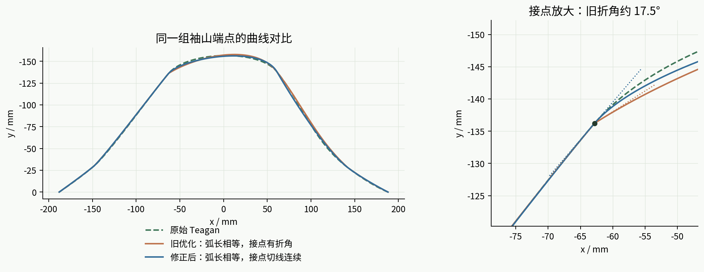

Teagan 曲线专项复核
原始母版曲线与 Teagan 4.10.2 的控制点一致。旧配缝优化器只检查弧长，可能在接点留下折角；现已补上 G1 切线连续性约束并修复。
本报告检查二维数字曲线及实际 SVG。G1 表示接点两侧的切线方向相同，不等于已验证真实衣服合身，也不代表 G2 曲率连续。

独立复算结果
| 变体 | 源控制点差量 | 旧优化最大接点夹角 | 修正后接点夹角 | 实际 SVG 配缝残差 |
|---|---|---|---|---|
| 基础款 | 0 mm | 17.533° | ＜10⁻¹⁰° | 0.00000019 mm |
| 宽松版 | 0 mm | 18.000° | ＜10⁻¹⁰° | 0.00000134 mm |
| 短身版 | 0 mm | 17.533° | ＜10⁻¹⁰° | 0.00000019 mm |
数据来自同一复核样例：先将袖山控制柄向上移动 25 mm，再固定端点修正配缝。微小数值是计算残差，不代表面料、裁床或打印机能达到同样精度。
如何检查
- 重新运行原始 Teagan 制版代码，逐个对照端点与两个控制点，最大差量为 0。
- 应用用 Bernstein 形式和 Gauss 积分；独立 Python 用幂基形式和 SciPy 自适应积分。弧长差异小于 0.000001 mm。
- 计算接点两侧的极限切线，核对位置连续与 G1 连续；求导数多项式的根，排查曲线内部的零导数退化点。接点工程阈值为 0.1°。
- 拆分后对照 2001 个参数位置，最大形状差异小于 0.00000001 mm。
- 从实际 SVG 路径重新读取坐标，复核弧长和接点。导出坐标保留 6 位小数，避免原先两位小数的舍入误差。
- 每段袖山采样 2001 点检查曲率符号变化；本批修正样例没有新增反弯。这不是对任意曲线的完备证明。
旧工程与验证范围
旧工程按原算法重放，保留原有控制点；新增检查会标记旧折角。只有明确点击“平滑修正 B 边”才追加新版操作，不会无声改写旧修订。
本次未验证 G2 曲率连续、真实面料与人体合身。还需版师复核和实物样衣试穿。三维视图仍是二维裁片的组装示意。